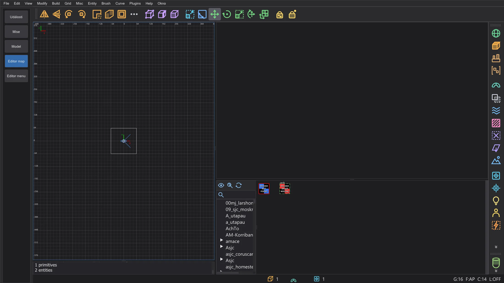
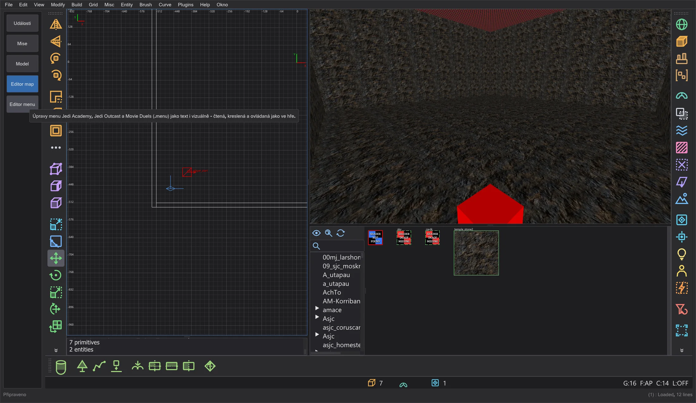
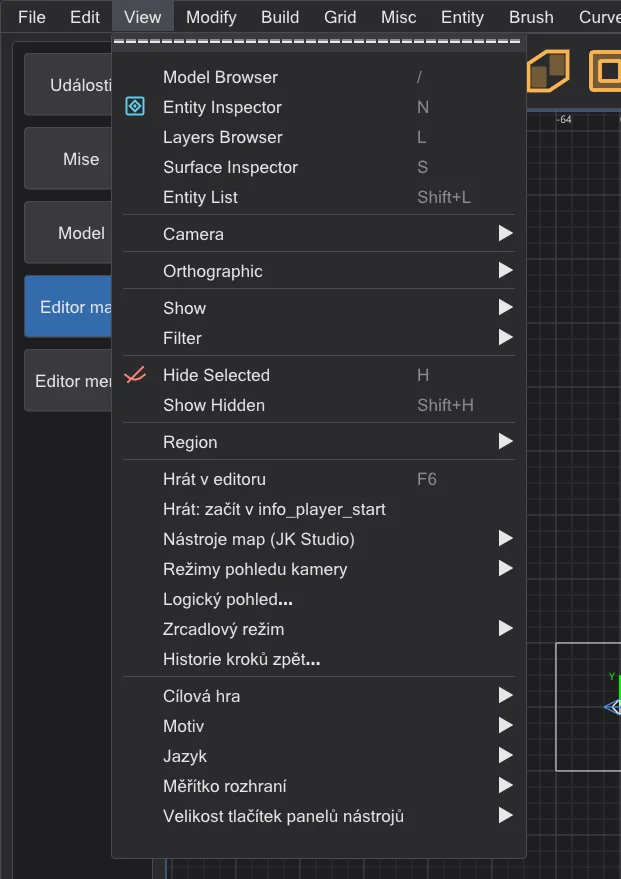
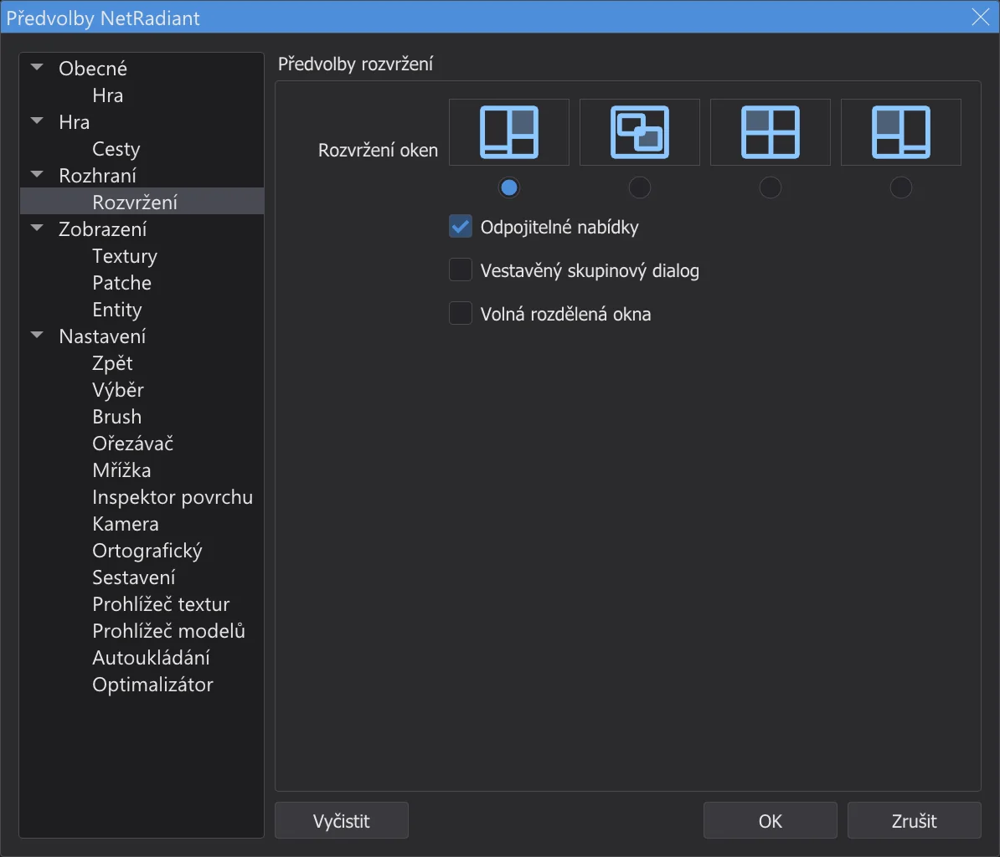
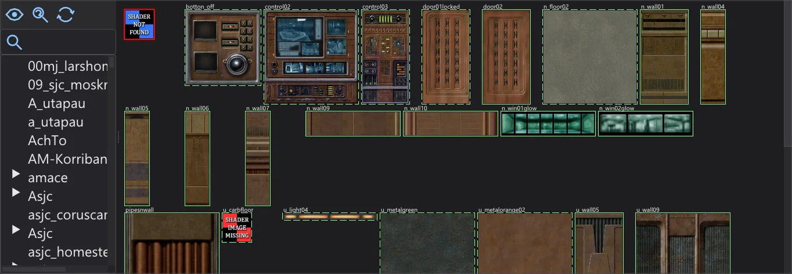
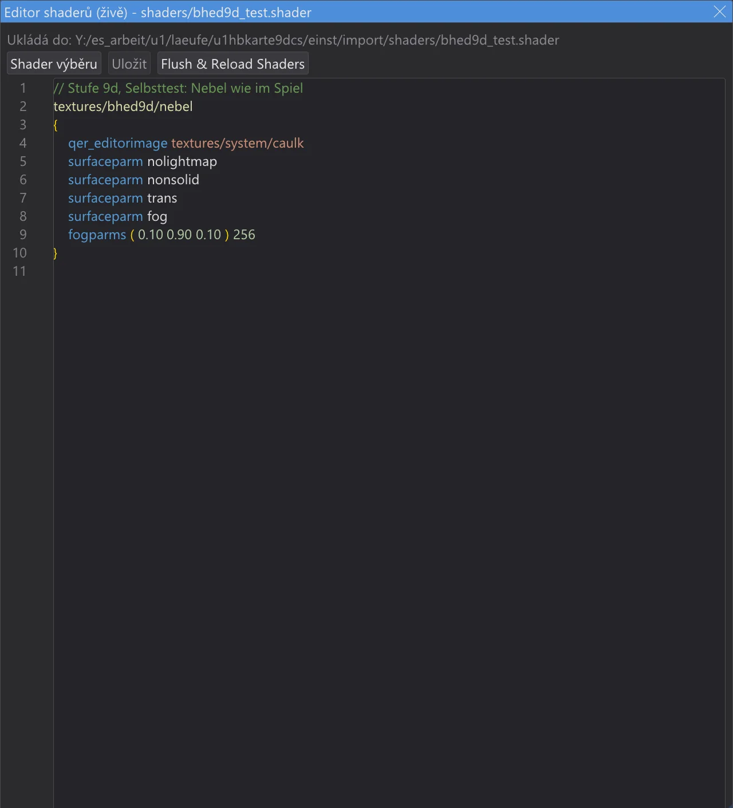
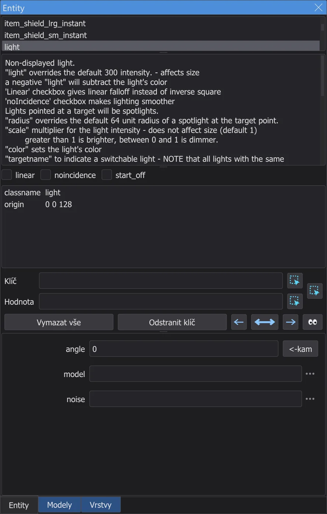
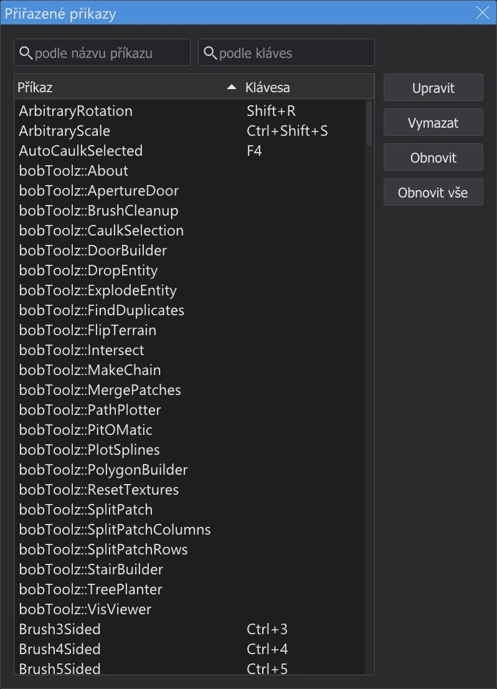

Editor map
Tvorba a úprava map pro Jedi Academy a Jedi Outcast - s nabídkami, okny a zkratkami NetRadiant-Custom, takže tutoriály pro něj napsané fungují krok za krokem.

Otevírání a ukládání map#
Přepněte na Editor map v liště režimů. Editor pracuje s hrou, pro kterou je program nastaven - Jedi Academy (i s Movie Duels) nebo Jedi Outcast - a s jejími texturami, shadery a definicemi entit; napoprvé je načte na pozadí. Bez složek hry v nastavení programu nejsou textury; v Preferences (stránky Hra a Cesty) může editor map použít i jinou hru a jiné složky. File > New Map začne prázdnou mapu, Open (Ctrl+O) otevře soubor .map, Otevřít .bsp zkompilovanou mapu hry (stránka Editor map: otevírání a změna hotových map), Save (Ctrl+S) a Save as ji zapíší - jako v NetRadiant-Custom se předchozí soubor uchová jako .bak. Naposledy otevřené mapy jsou dole v nabídce File. Než se zavře mapa s neuloženými změnami, editor se zeptá, zda ji uložit.
Nabídky, okna a rozvržení#
Nabídky, panely nástrojů a dialogy jsou uspořádány jako v NetRadiant-Custom (vydání 20260114): stejné pořadí, oddělovače, zkratky a mnemotechnické klávesy (Alt + podtržené písmeno). Popisky jsou v jazyce programu, barvy pocházejí z barevného schématu programu. Pluginy popisuje stránka Editor map: pluginy. Stavební nástroje popisuje stránka Editor map: stavební nástroje, kompilaci pomocí q3map2 Editor map: kompilace mapy.
Panely nástrojů: jako v NetRadiant-Custom jsou v hlavním panelu ve výchozím stavu skryté Open, Save, Undo, Redo a Select Touching - klikněte pravým tlačítkem na panel nástrojů a zaškrtnutím je zobrazíte. Každý panel nástrojů má úchyt (tečkovaný proužek na začátku): tažením ukotvíte hlavní panel, panel filtrů nebo pluginů u jiného okraje (nahoře, vlevo, vpravo, dole). Okraj a pořadí zůstanou i po restartu.

V editoru map se řádek nabídek programu stane řádkem nabídek NetRadiant-Custom (File ... Help): je jen jeden, karty skriptů jsou skryté a editor začíná hned pod ním. Co program potřebuje i zde, je přidáno na konec dvou nabídek: Misc má Jazyk, Barevné schéma a Měřítko, Help má Příručka (F1, tato příručka) a O aplikaci JK Studio; Check for NetRadiant update hledá novou verzi tohoto programu. Opuštění režimu v liště režimů vrátí nabídky a karty programu.
Každé okno editoru - 2D pohledy, kamera, konzole a prohlížeč textur - má tenký rámeček, takže vidíte, kde jedno končí a další začíná; mezi nimi je rozdělovač NetRadiant-Custom s úchytovými tečkami. Aktivní okno - to, na které jste klikli naposledy - má rámeček v barvě zvýraznění barevného schématu, tak jako NetRadiant-Custom obtahuje aktivní 2D pohled (View > Show > Show Window Outline to pro 2D pohledy vypne). Tažením rozdělovače měníte velikost oken; přetažené k okraji se okno sbalí a dá se zase vytáhnout.

Edit > Preferences (P) obsahuje předvolby NetRadiant-Custom. Na stránce Rozvržení zvolíte rozvržení oken - Běžné, Plovoucí, Rozdělené nebo Běžné vlevo - a zda je skupinový dialog s entitami a texturami v hlavním okně (Vestavěný skupinový dialog). Nové rozvržení platí, jakmile stisknete OK; NetRadiant-Custom k tomu potřebuje restart. V Plovoucí plovou okna uvnitř okna programu.

2D pohled a kamera#
| Tažení pravým tlačítkem (2D) | Posouvat pohled |
| Kolečko, Alt + tažení pravým tlačítkem (2D) | Přiblížení |
| Ctrl + Tab | Další 2D pohled (XY, XZ, YZ) |
| Prostřední tlačítko (2D) | Otočit kameru k bodu; s Ctrl se kamera přesune tam |
| Pravé kliknutí v kameře | Volné rozhlížení zap. a vyp.: myš otáčí pohled, W A S D nebo šipky pohybují |
| Šipky (kamera) | Dopředu, dozadu, otáčení; A / D do strany; kolečko pohybuje dopředu a dozadu |
| Tab | Kamera na výběr |
| Shift + [ / ] | Jak kamera kreslí (drátový model, ploché, texturované ...) |
| [ / ] | Mřížka menší / větší; 1 ... 9 ji nastaví přímo (1 až 256 jednotek) |
Výběr a stavba#
| Levé kliknutí | Vybrat, co je pod myší; další kliknutí na stejné místo vybere, co leží za tím |
| Shift + tažení levým tlačítkem | Vybrat (nebo zrušit výběr) vše, přes co myš přejede |
| Shift + tažení pravým tlačítkem | Vybrat obdélníkem |
| Ctrl + levé tlačítko (kamera) | Vybrat jednotlivé stěny |
| Tažení levým tlačítkem po výběru | Posunout ho; vedle vybraného brushe: tahat za jeho stěny a měnit velikost |
| Tažení levým tlačítkem v prázdném místě (2D, nic nevybráno) | Nakreslit nový brush s aktuální texturou |
| Esc | Zrušit výběr |
| Mezerník | Duplikovat výběr |
| Delete | Odstranit výběr |
| Ctrl + Z | Zpět |
| Ctrl + Shift + Z | Znovu |
| Ctrl + C / V | Kopírovat / vložit |
| H | Skrýt výběr |
| Shift + H | Zobrazit vše skryté |
Textury#

Prohlížeč textur ukazuje textury a shadery hry, složku po složce. V rozvržení Běžné je pod kamerou; v ostatních rozvrženích ho otevře View > Texture Browser (T). Kliknutí na texturu z ní udělá aktuální a dá ji na vybrané brushe nebo stěny; prostřední tlačítko ji jen vybere. Tažení pravým tlačítkem posouvá, pravé kliknutí otevře nabídku textury. V kameře prostřední tlačítko na stěně převezme její texturu; spolu s Ctrl nebo Shift maluje aktuální texturu na stěny, jako v NetRadiant-Custom. Upravit shader živě... (není v NetRadiant-Custom) v této nabídce otevře soubor shaderů v editoru s barevnou syntaxí a okrajem editoru skriptů (čísla řádků, značky změn); Uložit nikdy nezapisuje do složky hry - soubor shaderů hry jde pod stejným názvem do složky importu, která je v cestě hledání první - a shadery, prohlížeč textur, kamera a světlo v reálném čase se ihned znovu načtou. Každá změna souboru .shader ve složce importu (i z jiného textového editoru) je také znovu načte.

Entity#

Pravé kliknutí ve 2D pohledu (bez pohybu myši) otevře nabídku entit: vyberte třídu a v tom bodě umístíte novou entitu. Jsou-li vybrané brushe a vyberete brush třídu jako func_door, brushe se stanou touto entitou. View > Entity Inspector (N) ukáže vybranou entitu: její třídu s popisem, spawnflags jako zaškrtávací políčka, všechny klíče a hodnoty a pole pro klíče, které třída zná. Napište klíč a hodnotu a stiskem Enter je nastavíte. View > Entity List (Shift+L) vypíše všechny entity mapy. Entity > Connect Entities (Ctrl+K) propojí dvě vybrané entity pomocí target a targetname.
Konzole#
Konzole (v rozvržení Běžné pod 2D pohledem, jinak View > Console, O) ukazuje stejné zprávy jako NetRadiant-Custom: co se načetlo, varování o chybějících texturách a shaderech a jak dlouho trvalo načítání a ukládání.
Zkratky#

Editor map má zkratky NetRadiant-Custom. Platí, dokud je editor map zobrazen; vlastní zkratky programu jsou pak vypnuté. Edit > Shortcuts (Ctrl+Shift+P) vypíše každý příkaz s jeho klávesou; pole nahoře hledají podle názvu příkazu nebo podle kláves. Dvakrát klikněte na příkaz (nebo stiskněte Upravit) a pak novou klávesu; Vymazat klávesu odebere, Obnovit vrátí klávesu NetRadiant-Custom, Obnovit vše všechny. Patří-li klávesa už jinému příkazu, editor se nejdřív zeptá.
[ a ] potřebují AltGr (německá klávesnice: AltGr+8 / 9), fungují i tak - [ a ] mění mřížku a Shift+AltGr+8 / 9 se počítají jako Shift+[ / ]. Ale Ctrl+[ a Ctrl+] (Far Clip Plane In / Far Clip Plane Out) stisknout nelze, protože AltGr se už počítá jako Ctrl+Alt - přesně jako v NetRadiant-Custom. Použijte nabídku View > Camera, nebo dejte příkazům CubicClipZoomIn a CubicClipZoomOut jiné klávesy v Přiřazené příkazy.